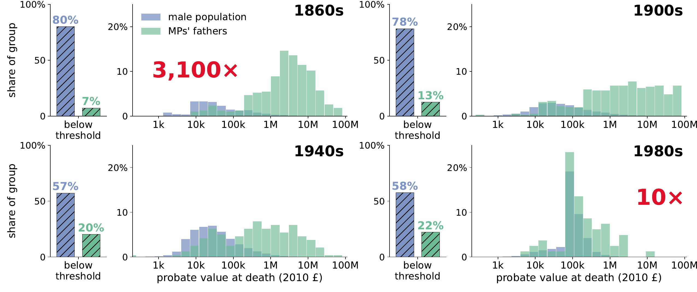
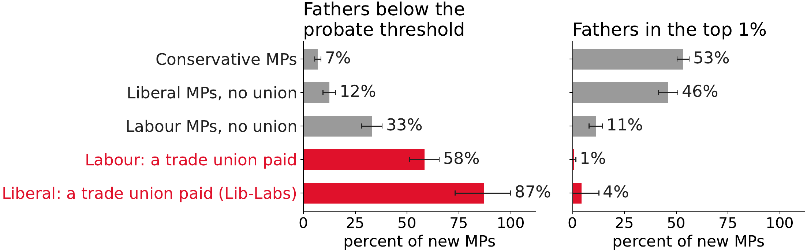
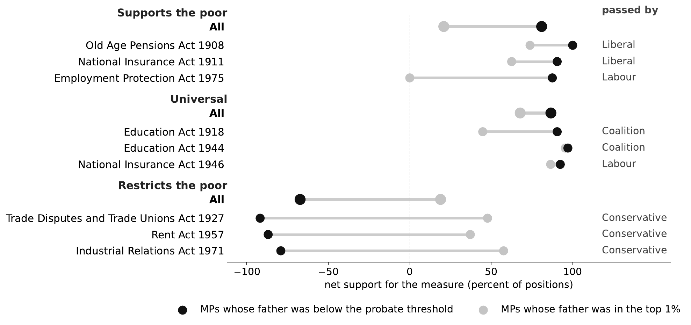
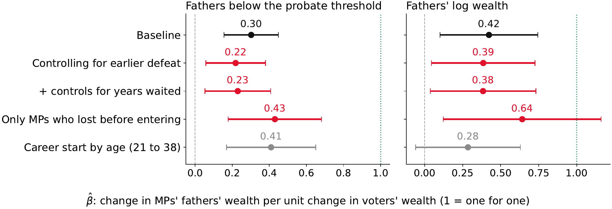
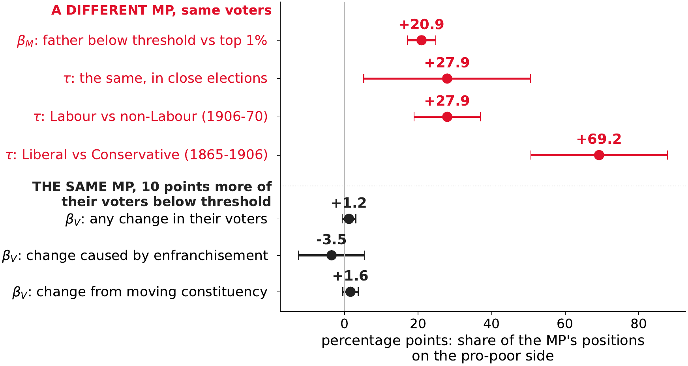

Papers
Job Market Paper
@unpublished{praninskas2026enfranchisement,
author = {Praninskas, Gailius and Munroe, Ellen},
title = {How Did Enfranchisement Lead to Representation?},
year = {2026},
note = {Job Market Paper}
}
Did enfranchisement make Parliament more representative of the population? If so, was it because politicians from poorer backgrounds were elected and advocated different policies, or because politicians of every background responded to what the new voters wanted? We study Britain’s democratisation, from a property franchise to universal suffrage, combining biographical records of Members of Parliament (MPs) with over 17 million probate (wealth-at-death) records to place politicians, their fathers and enfranchised voters in the same wealth distribution from 1858 to 1990. In the 1860s the typical MP’s father was 3,100 times as wealthy as the typical man; by the 1980s, 10 times. In parliamentary debates, MPs from poor families advocated for policies benefiting the poor, and spoke on issues poor voters cared about. We attribute at least one third of the change in MPs’ background wealth to the franchise — among MPs who entered Parliament at the same election, those who started their political careers under a wider franchise came from poorer families. The parties that fielded poorer candidates won more seats where more of the electorate was poor, and their gains after enfranchisement were largest in the constituencies with the most new poor voters. MPs already in office did not advocate more for the poor when their electors grew poorer; the change came from newly elected MPs from poor families. The costs of standing limited the effectiveness of early enfranchisement acts. The poor entered Parliament only once the unions and the Labour party paid for their candidacies. Enfranchisement helped Britain transition from plutocracy toward a common-interest state primarily by changing who sat in Parliament.
- 2026: Linnaeus Inequality Summit; KIZ Political Economy Workshop; HYRCE Liège; 2nd Warwick–LSE Political Economy PhD Conference; LSE SPEECH
- 2025: Royal Economic Society Annual Conference; Danish Historical Political Economy Workshop; 14th Annual Lithuanian Conference on Economic Research; Warwick–LSE Political Economy PhD Conference; Oxford University Political Economy Work in Progress; LSE Political Science Political Economy Work in Progress; LSE SPEECH
- 2024: LSE Workshop on Institutions and Political Economy; LSE SPEECH
Key Findings
▶
1. The wealth gap between Parliament and the population fell from 3,100 to 10 times
In the 1860s fewer than one in ten adults could vote, and four in five MPs died richer than 99 of every 100 of their contemporaries. The typical MP’s father was 3,100 times as wealthy as the typical man; by the 1980s, 10 times.

▶
2. Poorer MPs entered Parliament through Labour and the unions
Standing was expensive. In 1885 an average campaign cost £664, more than 95 percent of adults left at death. Nearly every working-class MP before 1900 was financed by a union, and poor Conservatives entered only after 1949, when the party took over candidates’ election expenses.

▶
3. MPs from poorer backgrounds advocated and passed pro-poor policies
In parliamentary debates, MPs from poor families advocated for policies benefiting the poor, and spoke on issues poor voters cared about.

▶
4. A wider franchise brought in MPs from poorer backgrounds
We attribute at least one third of the change in MPs’ background wealth to the franchise: among MPs who entered Parliament at the same election, those who started their political careers under a wider franchise came from poorer families.

▶
5. Enfranchisement affected policy by changing MPs
The parties that fielded poorer candidates won more seats where more of the electorate was poor, and their gains after enfranchisement were largest in the constituencies with the most new poor voters. MPs already in office did not advocate more for the poor when their electors grew poorer; the change came from newly elected MPs from poor families.

Working Papers
Wealth and Political Dynasties
Do political dynasties matter? This depends on how such dynasties are transmitted. Political dynasties sustain themselves by passing on two assets: economic and political capital. We merge the family trees of British MPs and other elites with individual wealth-at-death records since 1858 and show that both assets predict whether a dynasty continues. Over time the relative risk of entering Parliament has fallen for the sons of the rich and risen for the sons of MPs and other elites. The two assets have different consequences for competence and accountability. The sons of MPs enter Parliament earlier and more often than the sons of equally rich men, are more likely to reach government. Once there, they speak less. The sons of the rich, in contrast, take different positions from other MPs but are promoted no more often.
Privatising Common Property: Evidence from the Welsh Parliamentary Enclosures
Draft available upon request
Slides
Economists stress that well-defined private property rights matter for efficiency and development, yet little is known about what happens when common land is privatised. We study the Welsh Parliamentary Enclosures: 227 Acts of Parliament, 1760–1936, that put communally owned or managed land under a single owner. We digitise every Welsh enclosure and link them to parish censuses, grain prices and land-ownership records. Contrary to common historical accounts, enclosure did not reduce population or change farming occupations, and it was not associated with grain prices. Enclosed parishes ended up with significantly lower land values and less concentrated land ownership than unenclosed parishes. We argue that enclosure created many fragmented holdings, which led to hold-up and other contracting problems.
Work in Progress
Why Become a Politician? Pecuniary Incentives and Selection
People may enter politics because office is lucrative or because they want to change policy. These two motives may draw different types of politicians, and are likely to respond differently to institutional reform. We study this in Britain since 1832, observing the wealth at death of winning and losing candidates, the father’s wealth of every MP, and what MPs said once elected, across reforms in MP pay and the cost of standing. We decompose both motives from the returns to office among winning and losing candidates using a Roy model of political entry. We find pecuniary incentives only for Conservatives after 1945; politicians enter politics to change policy, rather than to receive financial returns.
Wealth Is Health? Life Expectancy and Public Goods
How did the link between family wealth and life expectancy change over the nineteenth and twentieth centuries, and what closed the gap? We link the universe of probate records to death records for England and Wales, 1858–1995. Longevity rose across the wealth distribution, most at the bottom and for women. Measured by the surname wealth of the previous generation, the gap between rich and poor families had closed by 1940, before antibiotics or the NHS. Individual causes of death for Ipswich, 1872–1910, show that tuberculosis, accidents and diarrhoea struck the poor far more than the rich. The 1870 Education Act did little to the gradient.